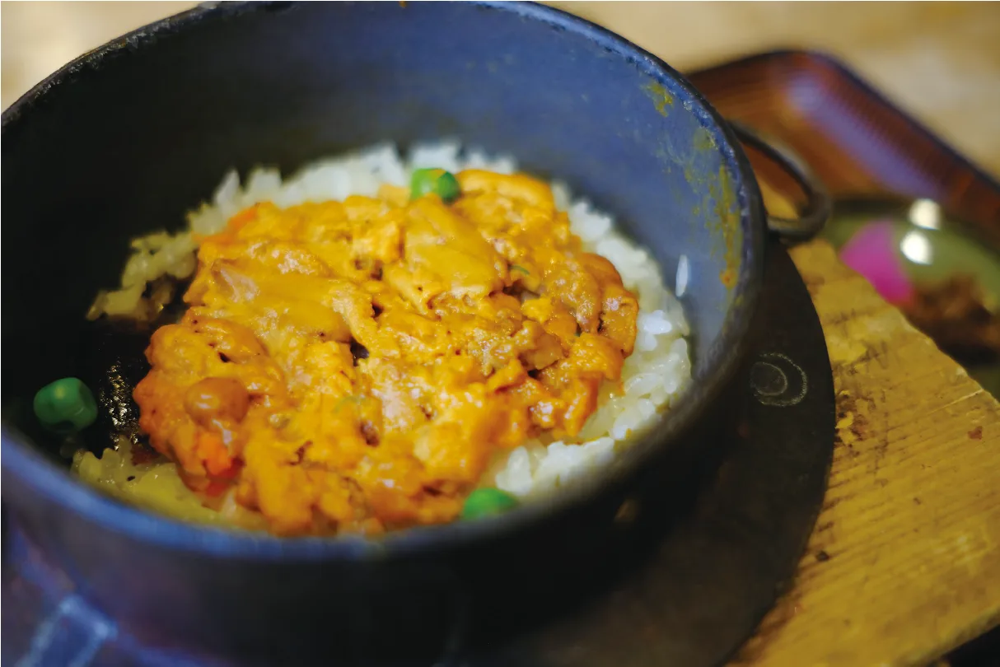
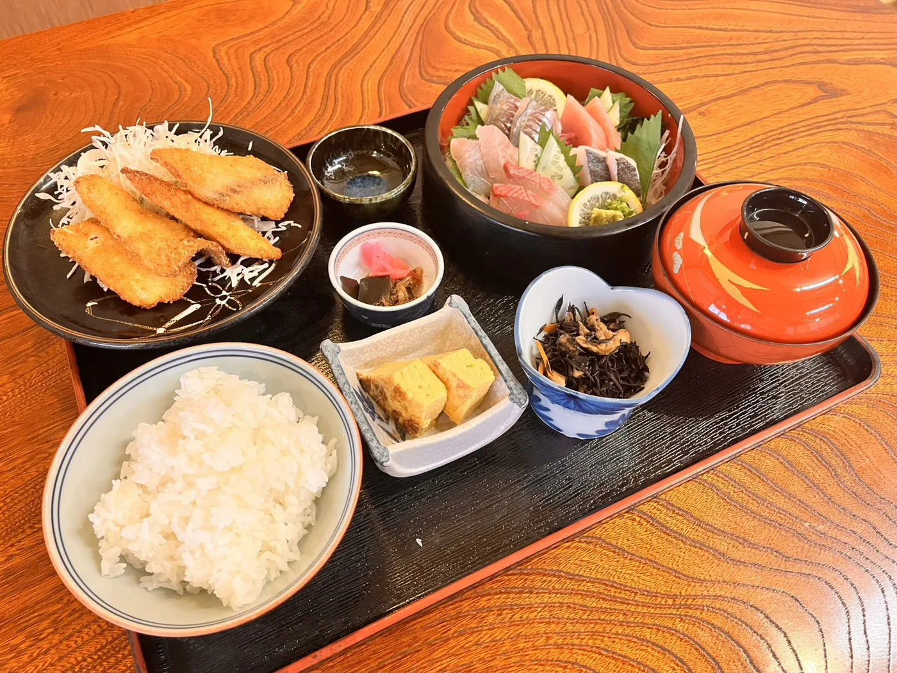
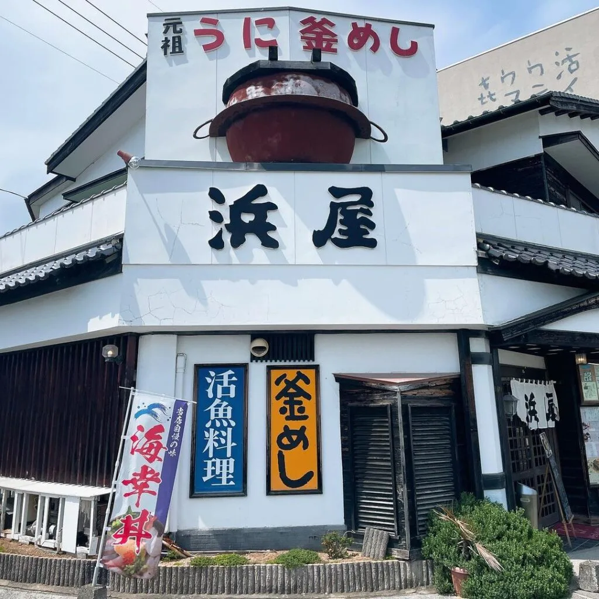
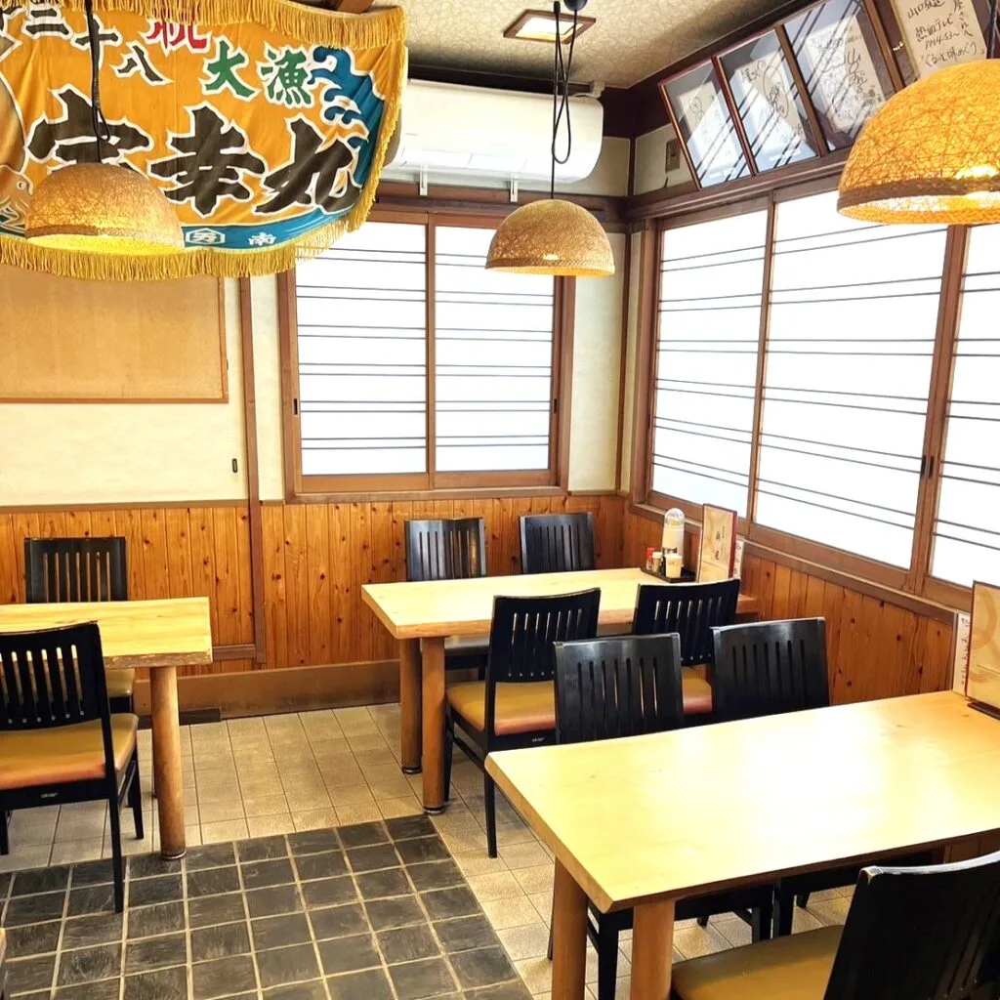
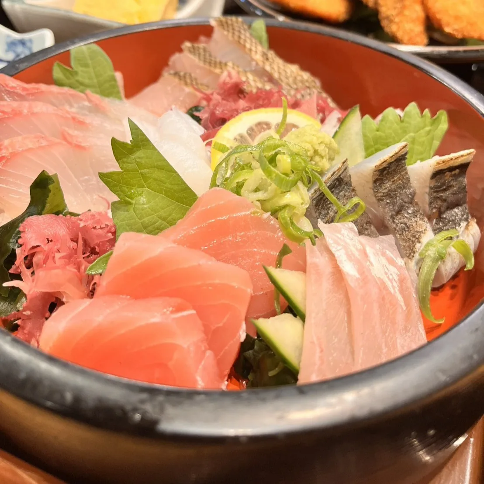
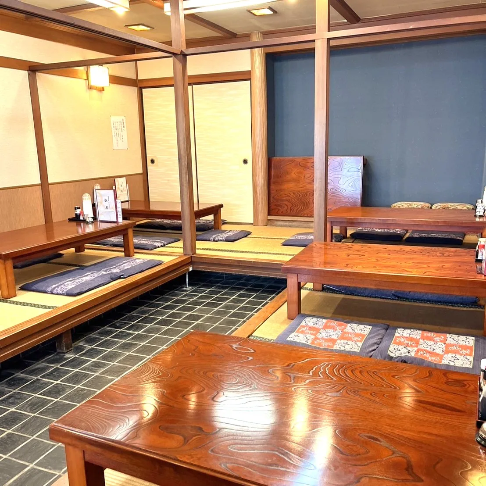
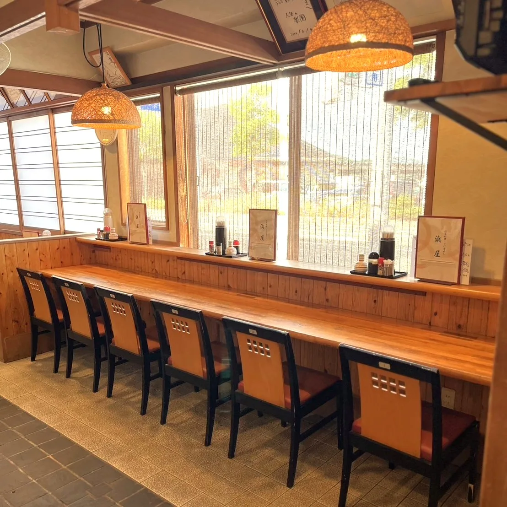
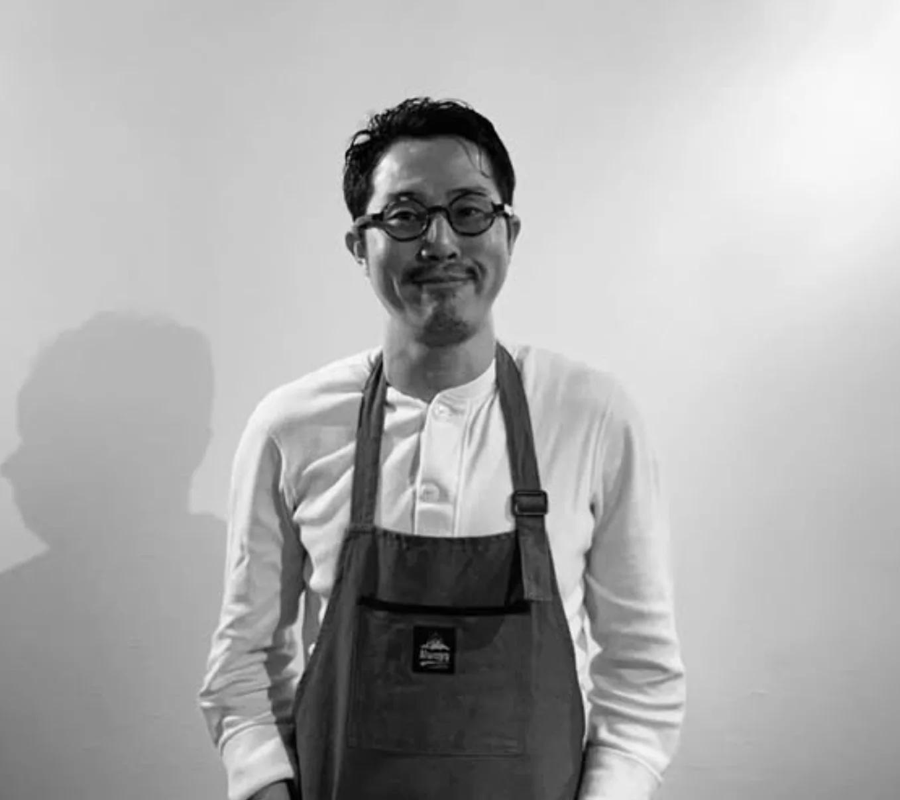
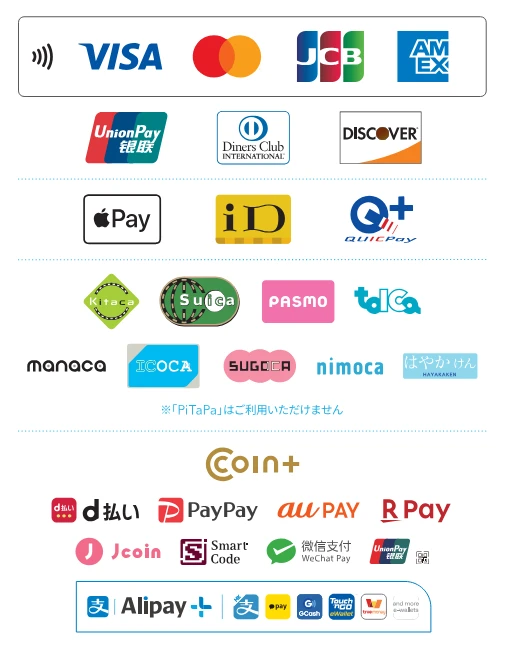

壱
うに釜めし
青海島産の極上生ウニをたっぷりと使い、火加減とタイミングを見極めながら鉄釜でおよそ二十分。丁寧に炊き上げます。
香ばしいおこげとともに、濃厚なウニの旨みをお楽しみください。
連休・臨時休業などは、お知らせをご確認ください。

壱
青海島産の極上生ウニをたっぷりと使い、火加減とタイミングを見極めながら鉄釜でおよそ二十分。丁寧に炊き上げます。
香ばしいおこげとともに、濃厚なウニの旨みをお楽しみください。

弐
仙崎・萩で仕入れた新鮮な魚を堪能できる、浜屋自慢の定食。お刺身と旬の魚のフライ、小鉢、だし巻き卵を添えて。
天然にこだわったお刺身は、その時期ごとの旬をお届けします。


Senzaki, Nagato ─ Yamaguchi
山口県長門市にある創業四十年以上の老舗、「元祖うに釜めしの浜屋」。
先代より受け継いだ釜めしと、地元の新鮮な食材でつくる定食をご用意しております。
仙崎駅から徒歩三分。向かいには道の駅「センザキッチン」。観光の合間に、ふらりとお立ち寄りください。

01
向かいの仙崎市場から新鮮な魚介を仕入れ、素材に合った調理法でお出しします。年間を通して多彩な魚が揚がる仙崎湾の、その時期の旬をどうぞ。

02
広々とした座敷は二十六席。小さなお子さま連れのご家族や、団体でのご利用にも。

03
カウンター席もございますので、おひとりでもお気軽にご利用いただけます。

Chef店主
先代から受け継いだ釜めしの味を守りながら、長門・萩で揚がる天然の魚にこだわった料理をお出ししています。
昼は昔ながらの釜めしと定食を、夜は地元の食材を使ったパスタやピッツァなどの洋食を。仙崎に来られた方に「また来たい」と思っていただける一皿を目指して、日々挑戦を続けています。
